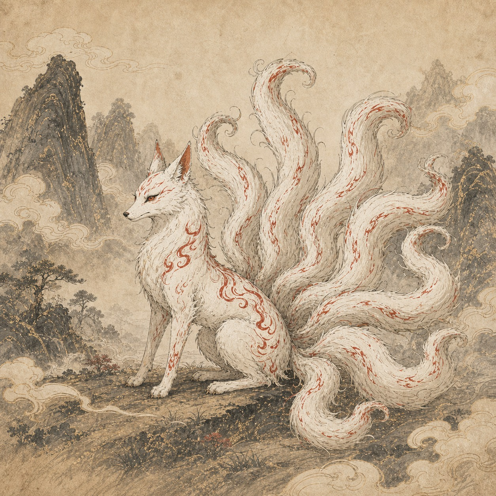

此间山海
《南山经》青丘之山条记述九尾狐。页面将地点作为文字线索整理，不对应现代地理坐标。
此地异兽
画中山海，书中来处 地图与资料说明
以相对位置，读神话山川
圆形全图与山水轮廓为本站视觉创作，表示相对关系。山经按山系读路线，海荒按篇章读方位与叙事。金色箭头为有出处的经文路段，虚线为本站浏览顺序；线长不代表里程。
让每一条记载有来处
经篇、形态与地点关系分项说明。引文注明公开录入文本或所据扫描本；文件页与书页分别标示。版本字形、住所关系待辨之处另列说明，艺术图像与原典文字分开阅读。
逐条查看资料核实记录 ↗这一处山海，尚未收录
当前地点地址无效，请从山海舆图选择一处已收录的地点。
返回山海舆图 ↗